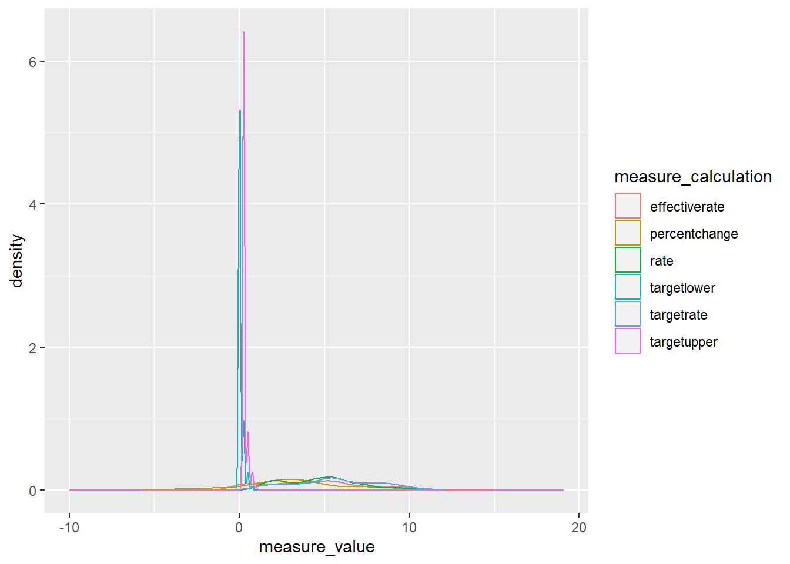
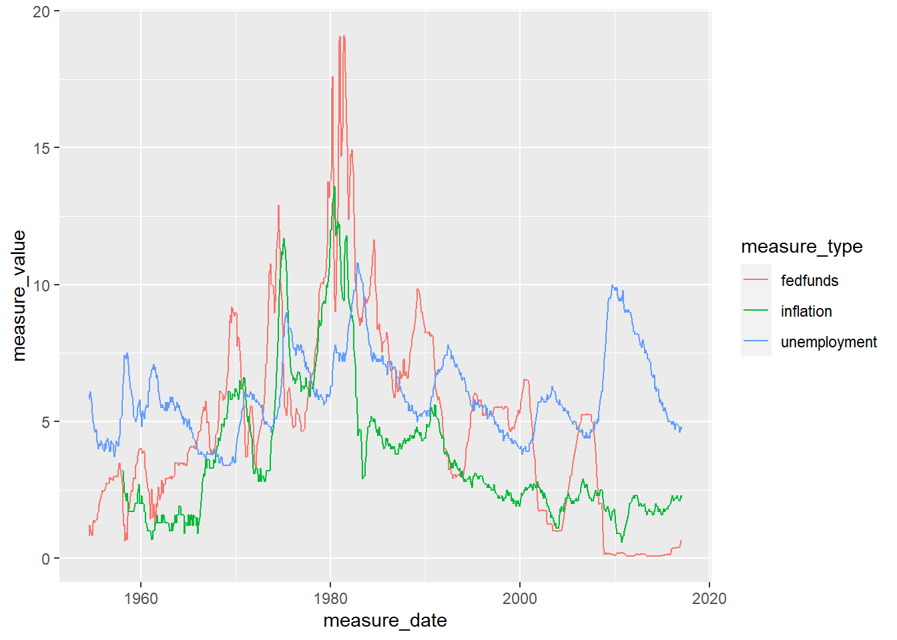

Code
library(tidyverse)
knitr::opts_chunk$set(echo = TRUE, warning=FALSE, message=FALSE)library(tidyverse)
knitr::opts_chunk$set(echo = TRUE, warning=FALSE, message=FALSE)Read in FedFundRate.csv and utilize functions to understand dataset and formulate next steps in clean-up
# Read in dataset and evaluate basics to understand any necessary basic cleanings that should be done before tidying
fedfundrate_raw <-read_csv("_data/FedFundsRate.csv")
colnames(fedfundrate_raw) [1] "Year" "Month"
[3] "Day" "Federal Funds Target Rate"
[5] "Federal Funds Upper Target" "Federal Funds Lower Target"
[7] "Effective Federal Funds Rate" "Real GDP (Percent Change)"
[9] "Unemployment Rate" "Inflation Rate" head(fedfundrate_raw)# A tibble: 6 × 10
Year Month Day Federal Fu…¹ Feder…² Feder…³ Effec…⁴ Real …⁵ Unemp…⁶ Infla…⁷
<dbl> <dbl> <dbl> <dbl> <dbl> <dbl> <dbl> <dbl> <dbl> <dbl>
1 1954 7 1 NA NA NA 0.8 4.6 5.8 NA
2 1954 8 1 NA NA NA 1.22 NA 6 NA
3 1954 9 1 NA NA NA 1.06 NA 6.1 NA
4 1954 10 1 NA NA NA 0.85 8 5.7 NA
5 1954 11 1 NA NA NA 0.83 NA 5.3 NA
6 1954 12 1 NA NA NA 1.28 NA 5 NA
# … with abbreviated variable names ¹`Federal Funds Target Rate`,
# ²`Federal Funds Upper Target`, ³`Federal Funds Lower Target`,
# ⁴`Effective Federal Funds Rate`, ⁵`Real GDP (Percent Change)`,
# ⁶`Unemployment Rate`, ⁷`Inflation Rate` tail(fedfundrate_raw)# A tibble: 6 × 10
Year Month Day Federal Fu…¹ Feder…² Feder…³ Effec…⁴ Real …⁵ Unemp…⁶ Infla…⁷
<dbl> <dbl> <dbl> <dbl> <dbl> <dbl> <dbl> <dbl> <dbl> <dbl>
1 2016 12 1 NA 0.5 0.25 0.54 NA 4.7 2.2
2 2016 12 14 NA 0.75 0.5 NA NA NA NA
3 2017 1 1 NA 0.75 0.5 0.65 NA 4.8 2.3
4 2017 2 1 NA 0.75 0.5 0.66 NA 4.7 2.2
5 2017 3 1 NA 0.75 0.5 NA NA NA NA
6 2017 3 16 NA 1 0.75 NA NA NA NA
# … with abbreviated variable names ¹`Federal Funds Target Rate`,
# ²`Federal Funds Upper Target`, ³`Federal Funds Lower Target`,
# ⁴`Effective Federal Funds Rate`, ⁵`Real GDP (Percent Change)`,
# ⁶`Unemployment Rate`, ⁷`Inflation Rate`# Create pre-tidy version of data, changing variable names to make easier to reference in code
fedfundrate_pretidy <-read_csv("_data/FedFundsRate.csv"
, skip =1
, col_names = c("year", "month", "day", "fedfunds_targetrate", "fedfunds_targetupper", "fedfunds_targetlower","fedfunds_effectiverate", "realgdp_percentchange", "unemployment_rate", "inflation_rate"))
# confirm updated read did not affect row count or column counts
nrow(fedfundrate_raw)[1] 904 nrow(fedfundrate_pretidy) [1] 904 ncol(fedfundrate_raw)[1] 10 ncol(fedfundrate_pretidy) [1] 10# Output basic summary to describe dataset
# quick summary
print(summarytools::dfSummary(fedfundrate_pretidy,
plain.ascii = FALSE,
style = "grid",
graph.magnif = 0.70, ),
method = 'render',
table.classes = 'table-condensed')| No | Variable | Stats / Values | Freqs (% of Valid) | Graph | Valid | Missing | ||||
|---|---|---|---|---|---|---|---|---|---|---|
| 1 | year [numeric] |
|
64 distinct values |  |
904 (100.0%) | 0 (0.0%) | ||||
| 2 | month [numeric] |
|
12 distinct values |  |
904 (100.0%) | 0 (0.0%) | ||||
| 3 | day [numeric] |
|
29 distinct values |  |
904 (100.0%) | 0 (0.0%) | ||||
| 4 | fedfunds_targetrate [numeric] |
|
63 distinct values |  |
462 (51.1%) | 442 (48.9%) | ||||
| 5 | fedfunds_targetupper [numeric] |
|
4 distinct values |  |
103 (11.4%) | 801 (88.6%) | ||||
| 6 | fedfunds_targetlower [numeric] |
|
4 distinct values | |
103 (11.4%) | 801 (88.6%) | ||||
| 7 | fedfunds_effectiverate [numeric] |
|
466 distinct values |  |
752 (83.2%) | 152 (16.8%) | ||||
| 8 | realgdp_percentchange [numeric] |
|
113 distinct values |  |
250 (27.7%) | 654 (72.3%) | ||||
| 9 | unemployment_rate [numeric] |
|
71 distinct values |  |
752 (83.2%) | 152 (16.8%) | ||||
| 10 | inflation_rate [numeric] |
|
106 distinct values |  |
710 (78.5%) | 194 (21.5%) |
Generated by summarytools 1.0.1 (R version 4.2.2)
2023-03-22
# Confirm date distinct by row
fedfundrate_pretidy%>%
select(year,month,day)%>%
n_distinct()[1] 904 # evaluate the count of records per year/month & distribution of day
fedfundrate_pretidy %>%
group_by(year,month) %>%
summarise( n = n()
, min(day, na.rm=T)
, max_day = max(day, na.rm=T))%>%
arrange(year, month)# A tibble: 753 × 5
# Groups: year [64]
year month n `min(day, na.rm = T)` max_day
<dbl> <dbl> <int> <dbl> <dbl>
1 1954 7 1 1 1
2 1954 8 1 1 1
3 1954 9 1 1 1
4 1954 10 1 1 1
5 1954 11 1 1 1
6 1954 12 1 1 1
7 1955 1 1 1 1
8 1955 2 1 1 1
9 1955 3 1 1 1
10 1955 4 1 1 1
# … with 743 more rows # evaluate the missingness of measures by year;
fedfundrate_pretidy %>%
group_by(year) %>%
summarise( n = n(),
na_count_fedfunds_targetrate = sum(is.na(fedfunds_targetrate )),
na_count_fedfunds_targetupper = sum(is.na(fedfunds_targetupper)),
na_count_fedfunds_targetlower = sum(is.na(fedfunds_targetlower)),
na_count_fedfunds_effectiverate = sum(is.na(fedfunds_effectiverate )),
na_count_realgdp_percentchange = sum(is.na(realgdp_percentchange)),
na_count_unemployment_rate = sum(is.na(unemployment_rate )),
na_count_inflation_rate = sum(is.na(inflation_rate)) )# A tibble: 64 × 9
year n na_count_fedfun…¹ na_co…² na_co…³ na_co…⁴ na_co…⁵ na_co…⁶ na_co…⁷
<dbl> <int> <int> <int> <int> <int> <int> <int> <int>
1 1954 6 6 6 6 0 4 0 6
2 1955 12 12 12 12 0 8 0 12
3 1956 12 12 12 12 0 8 0 12
4 1957 12 12 12 12 0 8 0 12
5 1958 12 12 12 12 0 8 0 0
6 1959 12 12 12 12 0 8 0 0
7 1960 12 12 12 12 0 8 0 0
8 1961 12 12 12 12 0 8 0 0
9 1962 12 12 12 12 0 8 0 0
10 1963 12 12 12 12 0 8 0 0
# … with 54 more rows, and abbreviated variable names
# ¹na_count_fedfunds_targetrate, ²na_count_fedfunds_targetupper,
# ³na_count_fedfunds_targetlower, ⁴na_count_fedfunds_effectiverate,
# ⁵na_count_realgdp_percentchange, ⁶na_count_unemployment_rate,
# ⁷na_count_inflation_rate #evaluate mean and median measures by year
fedfundrate_pretidy %>%
group_by(year) %>%
summarise(avg_fedfunds_targetrate = mean(fedfunds_targetrate, na.rm=TRUE),
med_fedfunds_targetrate = median(fedfunds_targetrate, na.rm=TRUE),
avg_fedfunds_targetupper = mean(fedfunds_targetupper, na.rm=TRUE),
med_fedfunds_targetupper = median(fedfunds_targetupper, na.rm=TRUE),
avg_fedfunds_targetlower = mean(fedfunds_targetlower, na.rm=TRUE),
med_fedfunds_targetlower = median(fedfunds_targetlower, na.rm=TRUE),
avg_fedfunds_effectiverate = mean(fedfunds_effectiverate, na.rm=TRUE),
med_fedfunds_effectiverate = median(fedfunds_effectiverate, na.rm=TRUE),
avg_realgdp_percentchange= mean(realgdp_percentchange, na.rm=TRUE),
med_realgdp_percentchange = median(realgdp_percentchange, na.rm=TRUE),
avg_unemployment_rate = mean(unemployment_rate, na.rm=TRUE),
med_unemployment_rate = median(unemployment_rate, na.rm=TRUE),
avg_inflation_rate = mean(inflation_rate, na.rm=TRUE),
med_inflation_rate = median(inflation_rate, na.rm=TRUE) )# A tibble: 64 × 15
year avg_f…¹ med_f…² avg_f…³ med_f…⁴ avg_f…⁵ med_f…⁶ avg_f…⁷ med_f…⁸ avg_r…⁹
<dbl> <dbl> <dbl> <dbl> <dbl> <dbl> <dbl> <dbl> <dbl> <dbl>
1 1954 NaN NA NaN NA NaN NA 1.01 0.955 6.3
2 1955 NaN NA NaN NA NaN NA 1.78 1.66 6.62
3 1956 NaN NA NaN NA NaN NA 2.73 2.74 2.08
4 1957 NaN NA NaN NA NaN NA 3.10 3 0.425
5 1958 NaN NA NaN NA NaN NA 1.57 1.6 2.97
6 1959 NaN NA NaN NA NaN NA 3.30 3.43 4.65
7 1960 NaN NA NaN NA NaN NA 3.22 3.28 0.975
8 1961 NaN NA NaN NA NaN NA 1.96 1.99 6.35
9 1962 NaN NA NaN NA NaN NA 2.71 2.82 4.32
10 1963 NaN NA NaN NA NaN NA 3.18 3.01 5.18
# … with 54 more rows, 5 more variables: med_realgdp_percentchange <dbl>,
# avg_unemployment_rate <dbl>, med_unemployment_rate <dbl>,
# avg_inflation_rate <dbl>, med_inflation_rate <dbl>, and abbreviated
# variable names ¹avg_fedfunds_targetrate, ²med_fedfunds_targetrate,
# ³avg_fedfunds_targetupper, ⁴med_fedfunds_targetupper,
# ⁵avg_fedfunds_targetlower, ⁶med_fedfunds_targetlower,
# ⁷avg_fedfunds_effectiverate, ⁸med_fedfunds_effectiverate, …The FedFundsRate dataset is a wide data set. To make it tidy, the data will need to be pivoted long and a new variable created to represent the type of measure per observation.
# Pivot longer to convert each measure to a row in the dataset #
fedfundrate_tidy <-
fedfundrate_pretidy %>%
pivot_longer( cols = c("fedfunds_targetrate", "fedfunds_targetupper", "fedfunds_targetlower","fedfunds_effectiverate", "realgdp_percentchange", "unemployment_rate", "inflation_rate"),
names_to = "measure_varname",
values_to = "measure_value",
values_drop_na = FALSE )
# View first and last obs of pivoted data
head(fedfundrate_tidy)# A tibble: 6 × 5
year month day measure_varname measure_value
<dbl> <dbl> <dbl> <chr> <dbl>
1 1954 7 1 fedfunds_targetrate NA
2 1954 7 1 fedfunds_targetupper NA
3 1954 7 1 fedfunds_targetlower NA
4 1954 7 1 fedfunds_effectiverate 0.8
5 1954 7 1 realgdp_percentchange 4.6
6 1954 7 1 unemployment_rate 5.8 tail(fedfundrate_tidy)# A tibble: 6 × 5
year month day measure_varname measure_value
<dbl> <dbl> <dbl> <chr> <dbl>
1 2017 3 16 fedfunds_targetupper 1
2 2017 3 16 fedfunds_targetlower 0.75
3 2017 3 16 fedfunds_effectiverate NA
4 2017 3 16 realgdp_percentchange NA
5 2017 3 16 unemployment_rate NA
6 2017 3 16 inflation_rate NA # Evaluate pivot results to confirm valid
# row counts
nrow(fedfundrate_raw) [1] 904 nrow(fedfundrate_pretidy) [1] 904 nrow(fedfundrate_tidy)[1] 6328 # column counts
ncol(fedfundrate_raw) [1] 10 ncol(fedfundrate_pretidy) [1] 10 ncol(fedfundrate_tidy)[1] 5 # calculation check
nrow(fedfundrate_pretidy) * 7[1] 6328# Remove observations where measure value missing;
fedfundrate_tidy <-
fedfundrate_tidy %>%
filter(!is.na(measure_value))
# Capture change in row number, evaluate observations to confirm look as expected;
nrow(fedfundrate_tidy)[1] 3132 head(fedfundrate_tidy)# A tibble: 6 × 5
year month day measure_varname measure_value
<dbl> <dbl> <dbl> <chr> <dbl>
1 1954 7 1 fedfunds_effectiverate 0.8
2 1954 7 1 realgdp_percentchange 4.6
3 1954 7 1 unemployment_rate 5.8
4 1954 8 1 fedfunds_effectiverate 1.22
5 1954 8 1 unemployment_rate 6
6 1954 9 1 fedfunds_effectiverate 1.06# Create table with frequency of day value by measure, month, and year
ggplot(fedfundrate_tidy,aes(x = year, y =measure_value, fill = measure_varname)) +
geom_bar(stat = "identity", position = "dodge")
Right now, type of measure is defined using one variable. I will mutate this single value to parse types in hopes of making graphics that are more focused. A single date variable will be created by concatenating what are now separatae columns for month, day, and year into single field. This will make displaying changes over time simpler to code. Finally, I will evaluate options for graphing results to inform best options for displaying relationship between measures or lack thereof.
Next steps:
Create final graphs to show relationship between federal fund rates & other measures
a - Federal funds line graph: rate, lower target, upper target b - Federal funds line graph: rate * (GDP, Inflation rate, Unemployment rate)
There is a lot of information in this dataset and it seems the best way to display is by plotting federal fund rate only, omiting target upper and lower because they are tightly correlated with the rate and their addition makes the visuals too dense.
# Create two new variables to represent measure type and calculation
fedfundrate_tidy <-
fedfundrate_tidy %>%
separate(measure_varname, c("measure_type", "measure_calculation"), sep = "_")
# confirm variables created as intended.
head(fedfundrate_tidy)# A tibble: 6 × 6
year month day measure_type measure_calculation measure_value
<dbl> <dbl> <dbl> <chr> <chr> <dbl>
1 1954 7 1 fedfunds effectiverate 0.8
2 1954 7 1 realgdp percentchange 4.6
3 1954 7 1 unemployment rate 5.8
4 1954 8 1 fedfunds effectiverate 1.22
5 1954 8 1 unemployment rate 6
6 1954 9 1 fedfunds effectiverate 1.06# Create single date field by combining variables month, day, and year
fedfundrate_tidy <-
fedfundrate_tidy %>%
mutate('measure_date' = make_date(year = year, month = month, day = day))
# confirm variables created as intended.
head(fedfundrate_tidy)# A tibble: 6 × 7
year month day measure_type measure_calculation measure_value measure_date
<dbl> <dbl> <dbl> <chr> <chr> <dbl> <date>
1 1954 7 1 fedfunds effectiverate 0.8 1954-07-01
2 1954 7 1 realgdp percentchange 4.6 1954-07-01
3 1954 7 1 unemployment rate 5.8 1954-07-01
4 1954 8 1 fedfunds effectiverate 1.22 1954-08-01
5 1954 8 1 unemployment rate 6 1954-08-01
6 1954 9 1 fedfunds effectiverate 1.06 1954-09-01 # Remove columns for month, day, and year
fedfundrate_tidy <-
fedfundrate_tidy %>%
select(-year, -month, -day)
# confirm variables removed as intended.
head(fedfundrate_tidy) # A tibble: 6 × 4
measure_type measure_calculation measure_value measure_date
<chr> <chr> <dbl> <date>
1 fedfunds effectiverate 0.8 1954-07-01
2 realgdp percentchange 4.6 1954-07-01
3 unemployment rate 5.8 1954-07-01
4 fedfunds effectiverate 1.22 1954-08-01
5 unemployment rate 6 1954-08-01
6 fedfunds effectiverate 1.06 1954-09-01 # evaluate distribution of records and year across values of measure_type
fedfundrate_tidy%>%
group_by(measure_type)%>%
summarise(num_records = n(),
min_measure_date = min(measure_date),
max_measure_date = max(measure_date))%>%
arrange(desc(num_records))# A tibble: 4 × 4
measure_type num_records min_measure_date max_measure_date
<chr> <int> <date> <date>
1 fedfunds 1420 1954-07-01 2017-03-16
2 unemployment 752 1954-07-01 2017-02-01
3 inflation 710 1958-01-01 2017-02-01
4 realgdp 250 1954-07-01 2016-10-01 # Look at histogram by measure calculation to evaluate distributions of rates versus percent change
ggplot(fedfundrate_tidy,
aes(x = measure_value, color = measure_calculation)) +
geom_density() 
# isolate federal fund fed funds effective rate plus non-fedfunds measure
fedfunds_graph <-
fedfundrate_tidy%>%
filter(measure_type=="fedfunds" & measure_calculation == "effectiverate"| measure_type !="fedfunds"& measure_type !="realgdp")
head(fedfunds_graph) # A tibble: 6 × 4
measure_type measure_calculation measure_value measure_date
<chr> <chr> <dbl> <date>
1 fedfunds effectiverate 0.8 1954-07-01
2 unemployment rate 5.8 1954-07-01
3 fedfunds effectiverate 1.22 1954-08-01
4 unemployment rate 6 1954-08-01
5 fedfunds effectiverate 1.06 1954-09-01
6 unemployment rate 6.1 1954-09-01 # confirm correct records selected
fedfunds_graph%>%
group_by (measure_type, measure_calculation )%>%
summarise(num_records = n())# A tibble: 3 × 3
# Groups: measure_type [3]
measure_type measure_calculation num_records
<chr> <chr> <int>
1 fedfunds effectiverate 752
2 inflation rate 710
3 unemployment rate 752# Create graph to show relationship between fed fund rate and other rate measures excluding % change GDP
# bar chart - not great a great result. Next!
ggplot(fedfunds_graph,aes(x = measure_date, y =measure_value, fill = measure_type)) +
geom_bar(stat = "identity", position = "dodge")
# line plot - this is better but hard to see trend. Next!
ggplot(fedfunds_graph, aes(x=measure_date, y=measure_value, group=measure_type, color=measure_type)) +
geom_line()
# line plot with regression line. That's much better!
ggplot(fedfunds_graph, aes(x = measure_date, y = measure_value, color = measure_type)) +
geom_point() +
geom_smooth(method = "lm", fill = NA)
The FedFundRates dataset provides measures of economic conditions in the US between July 1, 1954 and March 16, 2017. Each row of data represents a distinct date (month, day, year) and can include up to 6 measurements including: federal fund target rate, federal fund upper & lower target rates, federal fund lower target rate, federal funds effective rate, GDP percent change, unemployment rate, and inflation rate. However, variable are not populated consistently across observations
Graphs displayed below show the correlation between federal fund rates and measures for GDP, unemployment, and inflation. In short, how rates decrease alongside negative trends in economic health.
# filter dataframe to retain federal fund effective, GDP, unemployment, and inflation rates
fedfunds_final_graph <-
fedfundrate_tidy%>%
filter(measure_type=="fedfunds" & measure_calculation == "effectiverate"| measure_type !="fedfunds")
# confirm correct records selected
fedfunds_final_graph%>%
group_by (measure_type, measure_calculation )%>%
summarise(num_records = n()) # A tibble: 4 × 3
# Groups: measure_type [4]
measure_type measure_calculation num_records
<chr> <chr> <int>
1 fedfunds effectiverate 752
2 inflation rate 710
3 realgdp percentchange 250
4 unemployment rate 752 head(fedfunds_final_graph)# A tibble: 6 × 4
measure_type measure_calculation measure_value measure_date
<chr> <chr> <dbl> <date>
1 fedfunds effectiverate 0.8 1954-07-01
2 realgdp percentchange 4.6 1954-07-01
3 unemployment rate 5.8 1954-07-01
4 fedfunds effectiverate 1.22 1954-08-01
5 unemployment rate 6 1954-08-01
6 fedfunds effectiverate 1.06 1954-09-01 # line plot with regression line. That's much better!
ggplot(fedfunds_final_graph, aes(x = measure_date, y = measure_value, color = measure_type)) +
geom_point() +
geom_smooth(method = "lm", fill = NA)